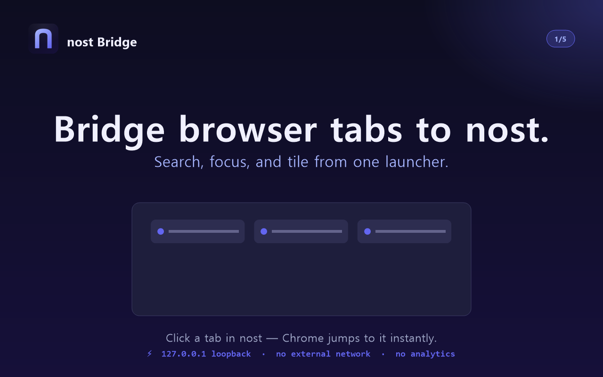

걸어가지 않고
도착하는 법.
폴더를 뒤지고, 탭을 헤매고, 바탕화면을 가로지르는 그 모든 걸음. nost는 한 화면에 도착점만 남깁니다.

"그 링크 어디 저장했더라?"
북마크 폴더를 뒤지고, 슬랙을 검색하고, 결국 다시 구글링까지. 도착하기 전에 길을 먼저 찾습니다.
"프로젝트마다 길이 다 달라."
업무는 이쪽, 사이드는 저쪽, 개인은 또 다른 쪽. 매번 다른 동선을 새로 외웁니다.
"같은 길을 매일 다시 걷습니다."
회의 시작 = Zoom + 노션 + 슬랙 + 캘린더 + 그 문서. 매일 30초 × 1년 = 3시간.
nost는 길을 줄이는 대신, 길을 없앱니다.
앱·URL·문서·폴더·색상·미디어 — 자주 가는 곳을 카드 한 장에.
한 번의 클릭이면, 거기에 도착해 있습니다.
전역 단축키
풀스크린 게임·영상 위에서도 단축키 한 번으로 즉시 띄움. ESC로 다시 숨김.
플로팅 뱃지
자주 쓰는 스페이스를 화면 위 떠있는 원형 뱃지로 떼어내 한 클릭으로 미니 창 호출.
플로팅 버튼
본 창이 닫혀 있어도 화면 가장자리에 항상 떠있는 작은 버튼으로 nost 복귀.
Tab 키 프리셋 전환
입력 안 할 때 Tab 누르면 프리셋 1 → 2 → 3 순환. 키보드만으로 컨텍스트 전환.
스페이스
관련 카드를 그룹으로 묶는 기본 단위. 색·아이콘·이름 자유 지정.
프리셋 1·2·3
완전히 독립된 스페이스 세트 3개. "업무용 / 개인용 / 작업용" 같이 통째로 전환.
컨테이너 슬롯
한 카드에 상하좌우 4개 보조 카드를 묶어서 멀티런처화. 드래그로 직관적 슬롯 채우기.
페어 레이아웃
좁은 스페이스는 같은 행에 둘씩 배치. 자주 쓰는 카드들이 한눈에.
클립보드 자동 감지
URL · 폴더 경로 · #HEX 컬러 · 일반 텍스트가 복사돼 있으면 한 줄 배너로 추가 제안.
스마트 스캔
현재 열린 창과 브라우저 탭을 한 번에 스캔해서 카드 후보로 보여줍니다.
빠른 추가
"+ 추가" 한 번이면 클립보드 분석 → 적합한 타입 자동 선택 → 곧장 카드.
시작 템플릿
처음 켜면 직군별(개발·디자인·학생·일반) 시드 카드로 빈 화면 0초 채움.
미디어 컨트롤 위젯
YouTube·Spotify·뭐든 OS 미디어 키로. Pill 드래그로 이전/다음, 슬라이더로 볼륨.
컬러 팔레트 위젯
Pantone 카드 스타일로 자주 쓰는 색을 보관. 클릭 = HEX 클립보드 복사.
노드 — 동시 실행
여러 카드를 한 그룹으로 묶어 한 번에 실행. 모니터별 정해진 위치에 자동 배치.
덱 — 순차 실행
카드들을 정해진 순서대로 실행. 회의 시작 루틴, 출근 루틴 같은 흐름 자동화.